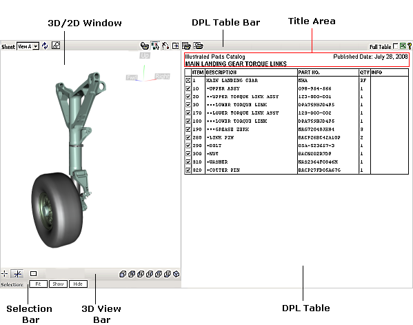
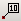
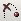
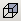
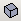
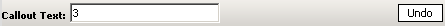

The user interface of IPC publication consists of two workspaces: 3D window or/and 2D window and DPL table. Each workspace has its own control elements described below. All colors mentioned in this document are default colors.
2D and 3D mode allows viewing both 2D and 3D images of the IPC publication in the 2D window and 3D window respectively.
In this mode, the IPC publication has a button (2D Graphics )
for switching between two windows.
3D only mode allows viewing only 3D images of the IPC publication.
In this mode, the 2D Graphics button is unavailable.
2D only mode allows viewing only 2D images of the IPC publication. In this mode,
the IPC publication contains only the sheets that have 2D images. Other sheets and the 2D Graphics button are unavailable.
|  |
The 3D window displays 3D image of the current sheet. You can navigate in the 3D window using the mouse or keyboard. A locator (axis tripod) at the top right corner of the 3D window allows determining the orientation of the 3D model relative to the axes.
The 2D window displays vector and raster images associated with the current sheet.
| Command | Button | Purpose |
|---|---|---|
| Sheet | Allows you to choose the detail sheet from a list of available sheets. | |
| Reset | Restores the original view on the current sheet. | |
| 2D Graphics | Allows you to switch between 2D window and 3D window. The button is available only in the 2D and 3D viewing mode. See the note above. | |
| Print Graphics | Allows you to print the current 3D/2D image as displayed in the 3D/2D window. | |
| Callouts* (for 3D window) |  |
Enables/disables the Callout mode that allows you to draw callouts in the 3D window. When the Callout mode is enabled,
the 3D View bar is replaced with the 3D Callout bar.
*The command is unavailable, if no browser plugins are used. |
| Ignore Transparent (for 3D window) | If enabled, allows you to click through the transparent items in the 3D window, as the transparent items become insensitive to the user's click. | |
| Skip Animation (for 3D window) |  | If enabled, allows you to avoid a smooth transition (animation) from one sheet to another and makes the transition between the sheets instant. |
| Show Graphics Only | Hides/Shows the DPL Table window. | |
| Highlighting |
When you select or point to an item in the 3D window or a callout in the 2D window, it is highlighted.
The Item number (or CSN) is displayed as a popup for the highlighted callout or item.
The highlight colors can be specified by the author before publishing the IPC publication.
By default the following colors are used:
yellow — for selected item or callout. The corresponding DPL row is also selected and highlighted in yellow in the DPL table. green — for pointed callout. The corresponding DPL row is also highlighted in the DPL table. |
Buttons for controlling viewing modes in the 3D window.
| Command | Button | Purpose |
|---|---|---|
| Set Center* | Allows you to specify the rotation center for the 3D model. *If the publication uses the browser plugins, the picked point is used as the center of rotation. If no browser plugins are used, the bounding box center of the picked item is used as the center of rotation. | |
| Show/Hide Rotation Center | Allows you to hide or show the rotation center. | |
| Fit All | Makes the entire 3D model fully visible in the 3D window. |
There are several viewing modes that allow showing the 3D model from a specified position:
| Command | Button | Purpose |
|---|---|---|
| Front | Shows the model from the front. | |
| Back |  | Shows the model from the back. |
| Left | Shows the model from the left side. | |
| Right | Shows the model from the right side. | |
| Top | Shows the model from the top. | |
| Bottom | Shows the model from the bottom. | |
| Isometric |  | Shows the model from the front left looking aft. |
|  |
Replaces the 3D View bar in the Callout mode (the Callouts button is pressed). The mode allows drawing callouts over a snap-shot of 3D model in the 3D window. The resulted image can be printed. Navigation is unavailable in the Callout mode.
| Command | Purpose |
|---|---|
| Callout Text | Allows typing a text for a new callout. |
| Undo | Removes the last callout drawn. |
*See the description of the Callout command.
Allows fitting, showing, hiding and making transparent the item(s) selected in the 3D window.
| Command | Purpose |
|---|---|
| Fit | Fits the bounding box of the selected item(s) to the 3D window. |
| Show | Makes visible the selected item(s) previously hidden in the 3D window. The check box of the corresponding DPL row becomes selected. |
| Hide | Hides the selected item(s) in the 3D window. The check box of the corresponding DPL row becomes cleared. |
| Transparency | Allows you to set the desired amount of transparency for the selected item(s). The Transparency command is available if one or more items are selected in the 3D window or if one or more DPL rows are selected in the DPL table. |
Displays the DPL table. Pay attention that the DPL table bar can contain a set of filters (for example: UCA, Model) for filtering the DPL data by the chosen criteria. The use of one or another filter depends on the specification component used for the IPC publication.
| Command | Button | Purpose |
|---|---|---|
| Print Table | Allows you to print the DPL table. | |
| Composite Print | Allows you to print both the DPL table and all 2D images available in the IPC publication. Each 2D image is printed out on a separate page. | Full Table | Shows the entire DPL table. The text of the rows that are not associated with the current sheet (inactive rows) is gray in color. | Export to Excel* |
Exports data of all selected DPL rows to a Microsoft Excel spreadsheet.
If no DPL rows are selected, only DPL rows associated with visible 3D items are exported.
*The command is unavailable, if no browser plugins are used. |
Help | Provides a help system for the user interface. | Title area | The Title area provides some information about the IPC publication, for example: publication name, sheet name, published date. |
| Check boxes column |
The Check boxes column is a DPL column with tick boxes.
The following indications are used:
— the DPL row has the corresponding item visible in the 3D window on the current sheet. — means that one or more items of the lower hierarchical level are hidden in the 3D window on the current sheet. — means that the corresponding item is hidden in the 3D window on the current sheet. — means that the DPL row has no corresponding 3D item on all sheets of the publication. no check box means that the DPL row has no corresponding 3D item on the current sheet. |
|
| Highlighting |
When you select or point to a DPL row, it is highlighted.
The Item number (or CSN) is displayed as a popup for the highlighted DPL row.
The highlight colors can be specified by the author before publishing the IPC publication.
By default the following colors are used:
gray — for pointed DPL row that has a corresponding item illustrated in the 3D/2D window. The corresponding item and callout are also highlighted in the 3D/2D window. rose — for pointed DPL row that has no corresponding item in the 3D/2D window or the corresponding item is hidden in the 3D window. yellow — for selected DPL row. The corresponding item and callout are also selected and highlighted in yellow in the 3D/2D window. |
Right-click an item in the 3D window or a DPL row in the DPL Table or a callout in the 2D window to access the context-sensitive menus.
| Command | Meaning | Item/CSN | Shows the Item number or Catalog Sequence Number (CSN) for the selected item or DPL row or callout. | Fit | Fits the bounding box of selected item(s) to the 3D window. | Show/Hide | Shows or hides the selected item in the 3D window. The check box of the corresponding DPL row becomes selected or cleared respectively. | Select/Unselect | Selects or unselects the chosen item in the 3D window or the chosen DPL row in the DPL table or the chosen callout in the 2D window. | Go to Sheet {Sheet name} | Shows all available transitions to the other sheets. The Sheet name in bold indicates that such sheet provides the best view for the 3D item associated with the corresponding DPL row. The current Sheet is marked as active in brackets. |
|---|---|
| Show All | Makes all hidden items visible in the 3D window and selects the corresponding check boxes in the DPL table. | Properties* (for 3D window) |
Allows you to select a rendering mode.
*The command is unavailable, if no browser plugins are used. |
| About | Shows the versions of IPC publication, 3D viewer and 2D viewer. |
| To | Do This |
|---|---|
| Select a DPL row |
Click the required DPL row.
The DPL row and the corresponding 3D item (or callout in 2D window) are highlighted. |
| Select several DPL rows one by one | Press and hold down CTRL, and then click each required DPL row. |
| Select a consecutive group of DPL rows | Click the first DPL row, press and hold down SHIFT, and then click the last DPL row. |
| Fit item in the 3D window | Double-click the required DPL row. |
| Hide item in the 3D window | Clear the check box of the required DPL row. |
| Show item in the 3D window | Select the check box of the required DPL row. |
| Hide/Show a group of items in the 3D window | Select several DPL rows whose corresponding items you want to hide/show, and then use the Hide and Show buttons on the Selection bar. |
Callouts in the 2D window are hotspots that allow for interaction between items and the corresponding DPL rows. Right-click in the 2D window to access the available context-sensitive commands. The commands depend on the 2D viewer used in the 2D window. Right-click a callout to access the context-sensitive commands related to the item (the commands are described in the section "Context-Sensitive Menus in 3D/2D Window and DPL Table")
| To | Do This |
|---|---|
| Select an item callout | Click the required callout. |
| Pan* |
Move the mouse while holding down its left button.
*The command is unavailable, if no browser plugins are used. |
| Zoom* |
Rotate the mouse wheel forward or backward.
*The command is unavailable, if no browser plugins are used. |
| To | Do This |
|---|---|
| Select an item | Click the required item. |
| Select several items one by one | Press and hold down CTRL, and then click each required 3D item. |
| Select hierarchy (in case of hierarchic structure) | Click the required 3D item and then click it once more while holding the SHIFT key, repeat clicking the 3D item with SHIFT pressed until all required upper levels of hierarchy are selected. In the 3D window, the items of all selected levels are highlighted, while in the DPL table, the DPL row associated with the item of the last selected level is highlighted. |
| Zoom in/out | Rotate the mouse wheel forward or backward. |
| Pan | Move the mouse with the mouse wheel pressed. |
| Spin | Move the mouse while holding down its left button. |
| Set rotation center |
On the 3D View bar, click the Set Center button , and then click the required item in the 3D window.
or Holding the ALT key, click any item in the 3D window*. or Position the pointer over any item in the 3D window, and then click the mouse wheel*. *The procedures are unavailable, if no browser plugins are used. |
| Fit 3D model | On the 3D View bar, click the Fit button . |
| Fit selected item(s) | Select the required item(s) in the 3D window or DPL table, and then click the Fit button on the Selection bar. |
| Show 3D model from specified position | On the 3D View bar, click the required button ( Front, Back, Left, Right, Top, Bottom, and Isometric). |
| Hide/Show a group of items | Press and hold down CTRL, click each required 3D item, and then use the Hide and Show buttons on the Selection bar. | Set transparency/opacity | Select the required item in the 3D window, and then drag the transparency slider on the Selection bar, until the desired effect is achieved in the 3D window. | Print 3D with Callouts* |
*The procedure is unavailable if no browser plugins are used. |